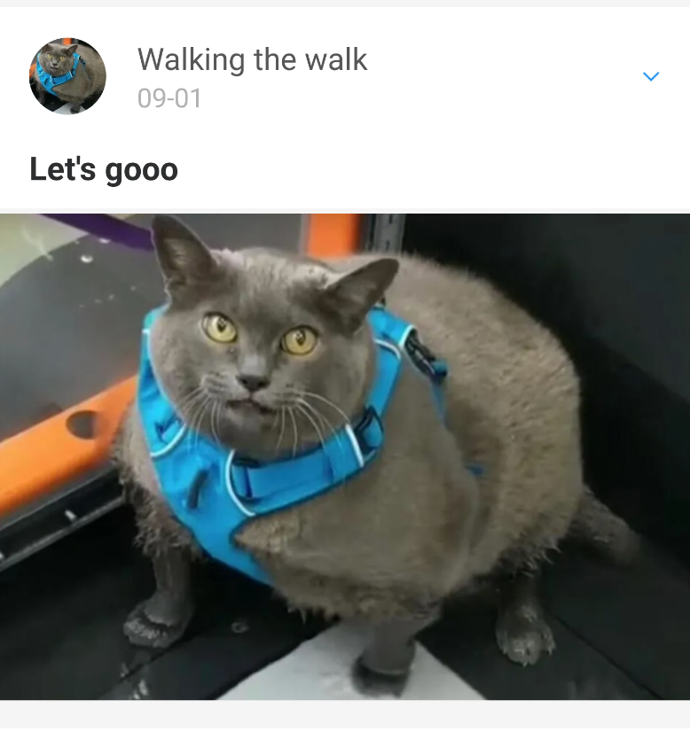

Don't fake steps
Recently a company I work started a charity event where it challenges its employees to reach 70.0000.000 steps in total. If reached it will double the donation to charity.
Naturally I was really excited to have the opportunity to contribute to such a noble cause.

Unfortunately, I'm not really a walker so after some digging I found that making specific changes to the gyroscope/accelaration sensors in an emulator would mimic walking. So with the help of Chat-GTP I wrote and tweaked a script that would continously change these sensors and effectively 'walk' while the emulator is running.


But seeing all these people doing their best, walking in the morning and evening for a good cause, made me think about my actions. My consience kicked in and I decided to pull out of the race. Either way, it was fun playing around with the emulator and we learned some lessons along the way.
If interested, check out my repo: fakestepsandroid (use responsibly)